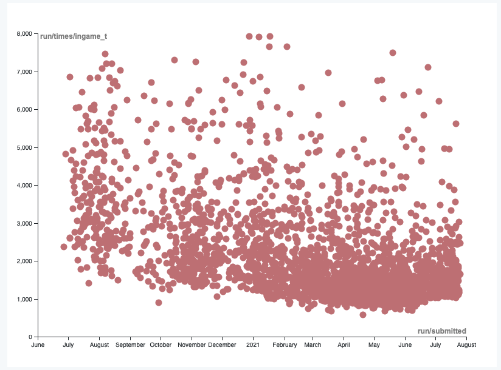
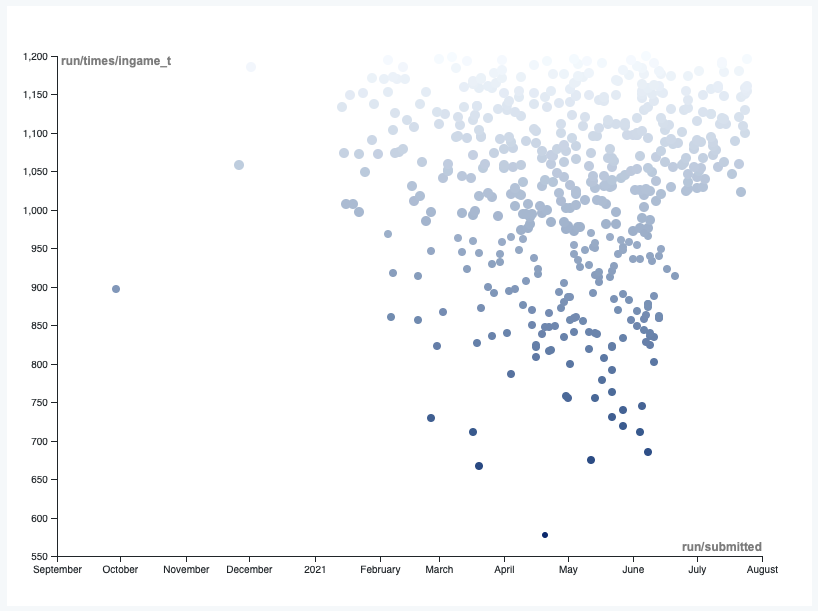

Economics of Video Games
Economics and gaming are not words one would expect to find in a single sentence, however there are many similarities between these disciplines. Models are an important part of the field of economics. Models are frameworks designed to describe complex systems at work, outline the entities and activities that take place within. They make visible the various components, and the relationships between them. Models are often used to illustrate phenomena that happen in the real world, but can also be used to speculatively describe systems that do not yet exist. Economic models are an attempt to make sense of the real world, and as detailed as they may be, they are unlikely to ever be universal general purpose models.
If one were to replace the word ‘models’ with ‘games’ in the paragraph above, the text would not still be valid. Games, just like economic models are in essence, created to describe systems, real and fictional. From the simplest games such as ‘Tic-Tac-Toe’, to city scale simulations such as ‘Grand Theft Auto’, they are very much similar to economic models. ‘Tic-Tac-Toe’ and ‘Grand Theft Auto’ are very different from each other, but share the characteristic of modelling the rules of a system which the agents are expected to abide by.
Game designers use economic models to help them create in-game systems and ensure that the gameplay and experience works as intended. Although the story, or the narrative of a game is core to the game, the economics of a game is just as important to ensure that the overall experience is cohesive. For example, the story may dictate that the player undertake certain tasks, but if the cost of certain actions is too expensive for the player, the immersion might break. Players of a game, just like people in economic models, are looking to get the most value of their investment. Just as people in the real world look to get the most value for their money, players look to get the most value of the time they spend playing the game.
In the same way that a layperson would conduct research in order to understand their options better and make informed decisions, the average player of a game will read the tutorial, and observe the game world to strategise their next moves. Speedrunners are those players who try to finish a game as fast as possible. A speedrunner is a special kind of player, the one who studies the game extensively, pores over the documentation, browses any available information, in order to complete the game as fast as possible. This is the player who inevitably always manages to get the most value from a game, with as little investment as possible. Just like the economist, who conducts extensive research on various models, various kinds of economic systems, in order to better understand how the world works. Put simple, the speedrunner, like the economist, will be the one who will get closest to the theoretical MU=MC (Marginal Utility = Marginal Cost).
The world of speedrunning is an intensely competitive one. The landscape is constantly evolving, as record times fall quickly and consistently. Every known game has its own speedrunning community, with the best players competing to find the quickest possible way to complete the game. The speedrunning community is also a rather supportive one, with players learning from each other, and from the larger player base consisting of regular players. The pace of improvement is usually rapid, fueled by the collective learning of the community.

Downward trend in times. Data from Speedrun ↗

Breakthroughs often lead to the community as a whole getting faster. Data from Speedrun ↗
One of the many reasons why speedrunners get quicker over time is the fact that there are usually hundreds of thousands, if not millions of attempts being made to complete the game each month. This rapid, iterative process is key to the search of finding the sweet spot of MU=MC. Players share their successes and failures in public forums, and this information is used to craft optimal strategies. This process of finding the theoretical point of equilibrium can be of incredible value to the discipline of economics.
Games have not only used economics to help create an immersive experience, but to also manage actual economies. Certain games, such as EVE Online, or a network of games, like the games created by Valve. Some virtual economies are even stronger than ones in real life. For a while, the economy of EverQuest was stronger than Russia’s. Economists hired by game developers oversee the sprawling economies and ensure that everything runs smoothly. Inflation, deflation and even recessions can occur in these worlds. Economists also ensure that content created by the developers is consumed by the players over a period of time, ensuring that players don’t get bored, and that developers have ample time to continue generating new content. Yanis Varoufakis, hired by Valve recently stated “Economic theory has come to a dead end — the last real breakthroughs were in the 1960s. But that’s not because we stopped being clever. We came up against a hard barrier. The future is going to be in experimentation and simulation — and video game communities give us a chance to do all that.”
In a now deleted blogpost, Varoufakis states that it would be possible to run through speculative scenarios, such as studying whether the U.S. would have rebounded without the New Deal in 1932 using game-based simulations. He called the digital economy “An economist’s paradise.”
The near unlimited potential of games and possibilities of a digital economy could help unlock new economic systems. Researchers have already started exploring new taxation systems using machine learning models and simulations. As useful as it is to use machine learning, it is not the same as having real people participate. It is impossible to test new economic models in the real world, and so digital platforms offer a very interesting opportunity. Games, played by real people make for a very interesting proposition for economists looking to experiment with new economic models. This is of course not a novel idea, but a one that the field of economics is yet to fully embrace. Players around the world participate in such experiments everyday, and have been doing so ever since multiplayer games were introduced. A brief scan of servers in popular multiplayer games such as Minecraft, or Roblox will serve as testament to the incredible diversity of systems already being experimented with. There is much to learn at the intersection of games and economics. Speedrunners and economists have similar goals, with plenty to learn from each other.
Reference
Maz, Alice. “Playing to Win” Alice Maz, 2017, http://alicemaz.com/writing/minecraft.html ↗. Accessed 3 June 2021.
Plumer, Brad. “The economics of video games.” Washington post, 2012, https://www.washingtonpost.com/news/wonk/wp/2012/09/28/the-economics-of-video-games/ ↗. Accessed 20 July 2021.
Rodrik, Dani. Economics Rules: Why Economics Works, When It Fails, and How To Tell The Difference. New York: W.W. Norton, 2015.
Varoufakis, Yanis. “It All Began With A Strange Email.” Valve Software, Valve Software, http://blogs.valvesoftware.com/economics/it-all-began-with-a-strange-email/ ↗. Accessed 23 July 2021.